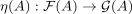
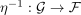
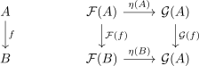
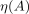
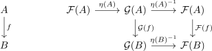
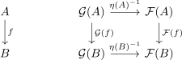

natural isomorphism and isomorphism on the objects
1. Proposition
Let  be categories,
be categories,  be functors and a natural transformation.
be functors and a natural transformation.
TFAE:
 is a natural isomorphism with a canonical inverse
is a natural isomorphism with a canonical inverse- for
 it holds, that
it holds, that 
is an isomorphism in
2. Proof
2.1. 1)  2)
2)
By assumption, there exists an

, such that
Analougosly for
η-1 ˆ η =&
(η-1 ˆ η)(A) =& (A)
2.2. 2) 1)
Let

be the unique inverse morphism.
Then following diagram commutes,

hence

Thus following diagram commutes
hence since

is an isomorphism and thus especially also an epimorphism
by diagram and pasting epimorphism, it follows that  is natural
is natural

note, that no choice was made, hence can be regarded as canonical.3
a